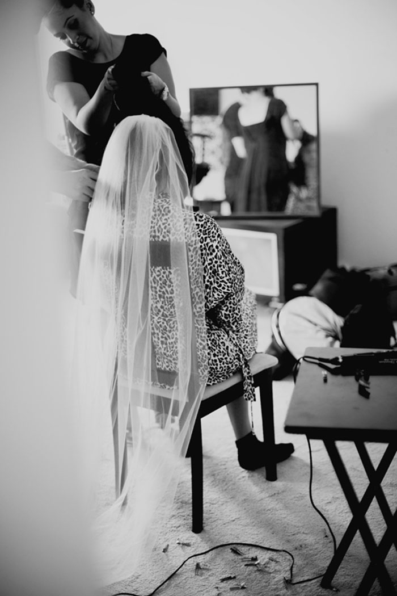
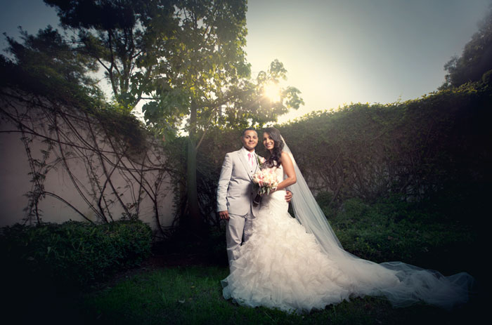
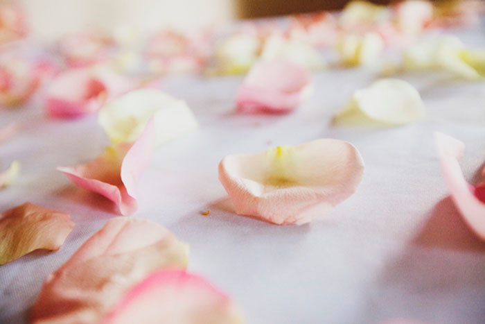
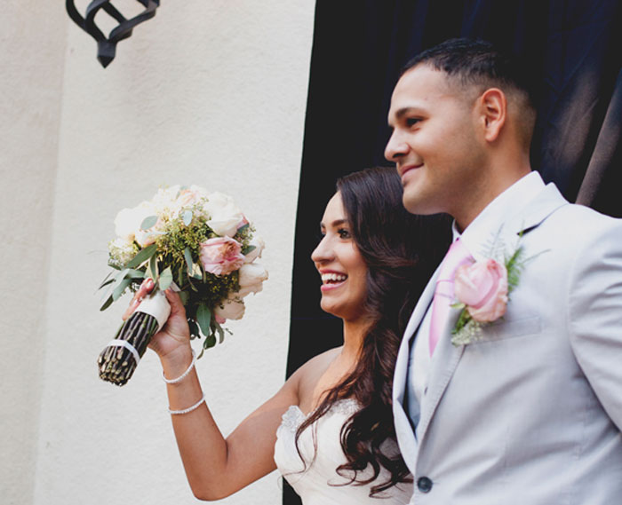
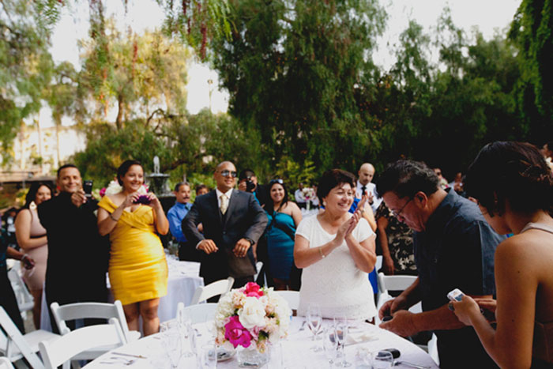
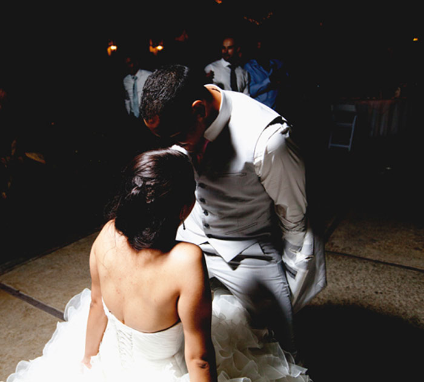
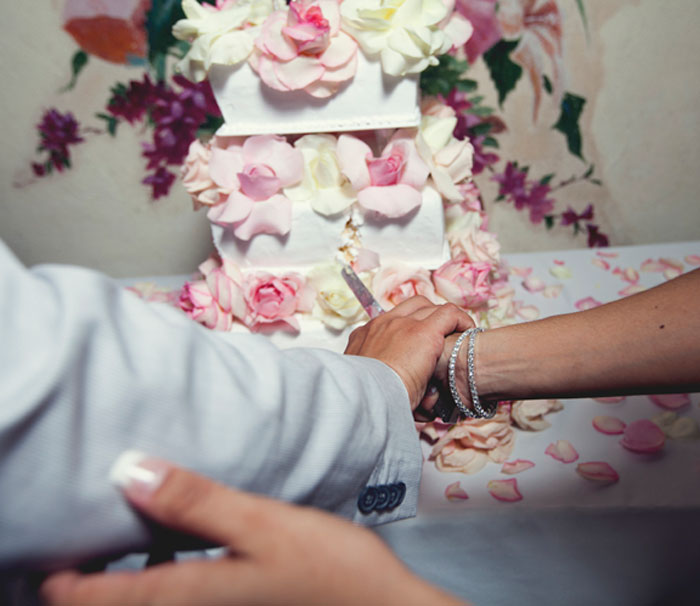

|
They came back! Our beautiful couple from Tucson got hitched in their home town, Los Angeles.
Daniela was wearing blue puffy-cloud jammies, but thinking about the unforgiving nature of social media, she quickly changed into more sexy attire. 
It fits!
Beer in hand, Daniela and her mini-party climbed into their limo and fretted about chewing gum and in-laws. And, of course, the wedding. Time seemed to stand still in the summer heat. The guests waited while Daniela approached the church.
And then, there she was.
The little ring-bearer really wanted to give them the rings!
The priest told them, "May you be blessed with children. But not too soon!"
They walked out the door and we followed them a few blocks away to their reception at the LA River Center and Gardens.


Pink roses and Modelo. Nothin' like it.  And there they were! The mariachis played and the guests cheered them on.  Hugs and gifts were strewn about. What a recklessly happy celebration! And then the slideshow and toasts began. Alonso had no qualms about smiling (he wouldn't smile when I told him to)! Maybe it was the tequila, or maybe it was just Daniela.
Night began to fall. Daniela first danced with Alonso, then with her father.
Alonso grew a tail during the Dollar Dance. What was he going to buy with all those dollars?  He decided to seduce Daniela instead.
What a lovely train of single ladies during the Snake Dance!
Yep. This one is next in line! 
Oh, these two!
|